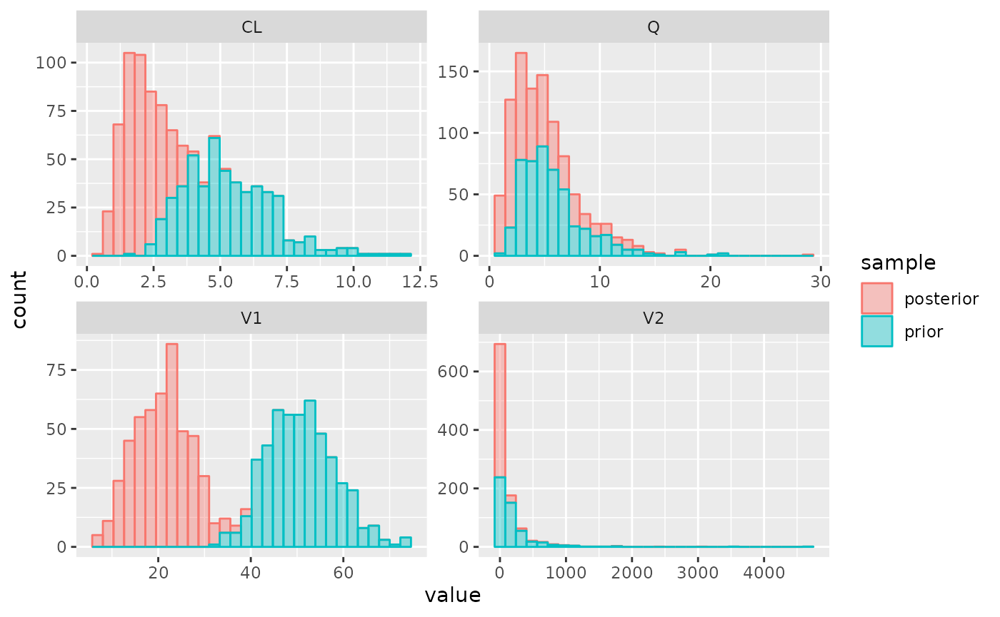

Getting started
PKPDposterior.RmdWe will start with defining a simple population PK model, for a fictitious drug. We will define a one-compartment model, defined using standard PK parameters, inter-individual variability (IIV) and residual variability. We will then provide some TDM data, and sample from the posterior to learn about the patient’s individual PK parameters.
First, we will load the necessary libraries
and define the values of the population PK parameters:
pars <- list(
CL = 5,
V1 = 50,
Q = 5,
V2 = 100
)and the IIV (as standard deviation) and RUV:
Now we can use new_stan_model() to define the model equations. Since this is a simple linear PK model, we do not have to define the ODE system ourselves, but can instead use the analytic solution that is built into Torsten. The only thing we need to define is how the parameters in Torsten related to any covariates that we want to use in the model. In this example, we’ll implement an allometric model for the PK parameters:
model <- new_stan_model(
parameters = pars,
parameter_definitions = list(
"CL" = "CL * (WT[j]/70)^0.75",
"Q" = "Q * (WT[j]/70)^0.75",
"V1" = "V1 * (WT[j]/70)",
"V2" = "V2 * (WT[j]/70)",
"KA" = "0"
),
covariate_definitions = list(
"WT" = "real"
),
solver = "pmx_solve_twocpt",
scale = "(V1 * mean(WT))"
)The other elements that were specified above were:
- the covariate definitions: we only need to specify what the data type of the respective covariates is. Here, we only have a continuous covariate, so we specify it as
real. - the solver: the two-compartment analytic equation in Torsten is referenced as
pmx_solve_twocpt. Please refer to the Torsten documentation for more information about the available solvers. - the scale: how the observed data relate to the modeled quantity (amounts in blood).
We can then write this model to file, and compile it using Stan:
model_file <- write_stan_model(model)
mod <- load_model(model_file)Next, we should define the dosing regimen for the drug, as well as patient covariates, which is done using PKPDsim functionality:
regimen <- new_regimen(
amt = 1500,
n = 3,
times = c(0, 24, 48),
type = 'infusion',
cmt = 2,
t_inf = 2
)
covariates <- list(WT = new_covariate(70))Finally, we can define the TDM data that we want to use to inform the posterior:
tdm_data <- data.frame(
t = c(2.5, 11.5),
dv = c(40, 14),
type = "pk"
)These data inputs should then be combined into a Stan dataset:
data <- new_stan_data(
regimen = regimen,
covariates = covariates,
data = tdm_data,
parameters = pars,
iiv = iiv,
ruv = ruv,
dose_cmt = 2 # into the central compartment
)Now we have both the model and the data ready to sample from the posterior:
post <- get_mcmc_posterior(
mod = mod,
data = data,
verbose = TRUE
)## Running MCMC with 1 chain...
##
## Chain 1 Iteration: 1 / 1000 [ 0%] (Warmup)
## Chain 1 Iteration: 50 / 1000 [ 5%] (Warmup)
## Chain 1 Iteration: 100 / 1000 [ 10%] (Warmup)
## Chain 1 Iteration: 150 / 1000 [ 15%] (Warmup)
## Chain 1 Iteration: 200 / 1000 [ 20%] (Warmup)
## Chain 1 Iteration: 250 / 1000 [ 25%] (Warmup)
## Chain 1 Iteration: 300 / 1000 [ 30%] (Warmup)
## Chain 1 Iteration: 350 / 1000 [ 35%] (Warmup)
## Chain 1 Iteration: 400 / 1000 [ 40%] (Warmup)
## Chain 1 Iteration: 450 / 1000 [ 45%] (Warmup)
## Chain 1 Iteration: 500 / 1000 [ 50%] (Warmup)
## Chain 1 Iteration: 501 / 1000 [ 50%] (Sampling)
## Chain 1 Iteration: 550 / 1000 [ 55%] (Sampling)
## Chain 1 Iteration: 600 / 1000 [ 60%] (Sampling)
## Chain 1 Iteration: 650 / 1000 [ 65%] (Sampling)
## Chain 1 Iteration: 700 / 1000 [ 70%] (Sampling)
## Chain 1 Iteration: 750 / 1000 [ 75%] (Sampling)
## Chain 1 Iteration: 800 / 1000 [ 80%] (Sampling)
## Chain 1 Iteration: 850 / 1000 [ 85%] (Sampling)
## Chain 1 Iteration: 900 / 1000 [ 90%] (Sampling)
## Chain 1 Iteration: 950 / 1000 [ 95%] (Sampling)
## Chain 1 Iteration: 1000 / 1000 [100%] (Sampling)
## Chain 1 finished in 0.5 seconds.Summary info about the posterior can be shown by just evaluating the object:
post## Parameters:
## posterior_mode mean median sd q5 q95 rhat
## CL 1.799 2.078 1.975 0.742 1.011 3.403 1.017
## V1 22.535 20.997 20.907 6.065 11.872 30.279 1.006
## Q 2.304 4.413 3.509 3.130 1.276 10.522 1.014
## V2 1.036 43.435 1.640 214.182 0.298 174.659 1.017
##
## Observed data, posterior:
## type time dv mean loc pct pct5 pct95
## 1 pk 2.5 40 0.9100449 -----|----o 1 0.5472757 1.5048305
## 2 pk 11.5 14 0.3743409 -----|----o 1 0.1327699 0.7291447Parameter distributions for the posterior and prior can be plotted using the plot_params() function:
plot_params(post)## `stat_bin()` using `bins = 30`. Pick better value with `binwidth`.